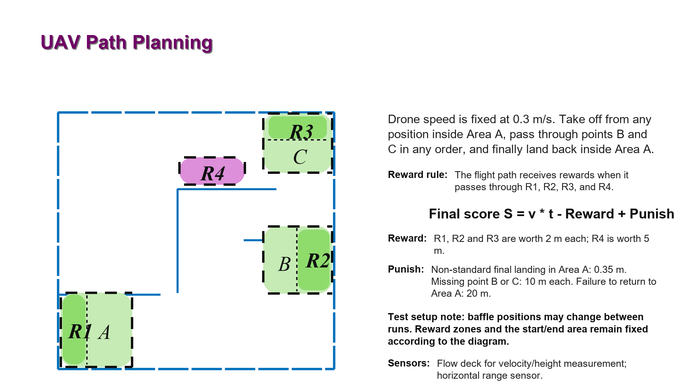

ChineseEnglish
Experiment 13: Integrated Project Demonstration
Final Comprehensive Test
The final assessment contains one comprehensive task only. The drone flies at a constant speed of 0.3 m/s, takes off from any position inside Area A, passes through points B and C in any order, and finally lands back inside Area A.

Arena Constraints
- Baffle positions are not necessarily fixed; the instructor may adjust the baffle layout between test runs, and the on-site setup is authoritative.
- The reward points and start/end points are fixed: R1, R2, R3, and R4 keep their positions, and the start/end area is fixed as Area A.
- The program should not only hard-code the baffle coordinates shown in the diagram. It should use sensor data, on-site observation, or planning logic to avoid obstacles and adjust the route.
Scoring Rules
- Final score: S = v × t - Reward + Punish. A lower score is better.
- Reward: R1, R2, and R3 are worth 2 m each; R4 is worth 5 m.
- Punish: a non-standard final landing in Area A adds 0.35 m; missing point B or C adds 10 m per point; failing to return to Area A adds 20 m.
- Available sensors include the Flow deck for velocity and height measurement and the horizontal range sensor.
Demonstration Requirements
- Before the demonstration, explain the code logic, speed setting, sensor usage, and emergency-stop plan to the instructor.
- During flight, one student should monitor the terminal and emergency stop, while another student records the full flight process.
- If the drone touches a baffle, shows abnormal attitude, or enters an unsafe state, stop the program immediately.